MEOW
15 Reasons Why We Love Cats
By Hannah Gutenplan (www.thefw.com)
The internet has long had a love affair with cats. Some people even go so far as to insist that the internet is made of cats.
We are not quite sure why this is. We cannot say why the internet loves cats, but we can try to explain why we do.
Inspired by this thread on Reddit, we have chosen our favorite gifs that illustrate why we love cats.
That's right - 15 cat gifs are below - try not to get too excited.
 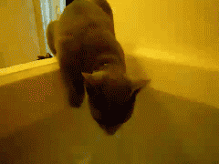
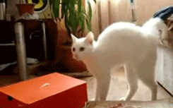
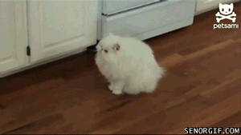
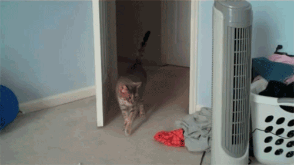
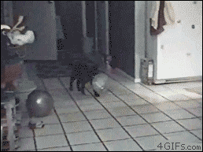
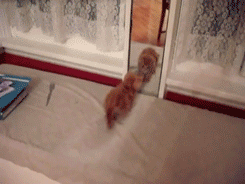
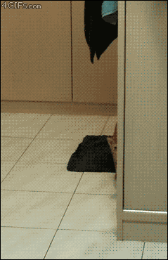
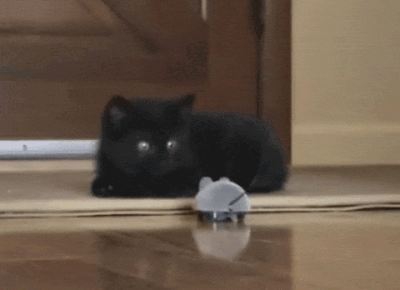
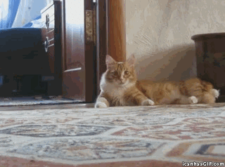
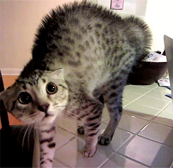
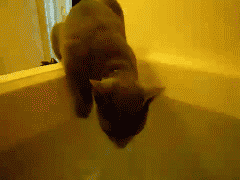
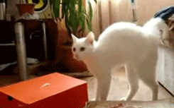
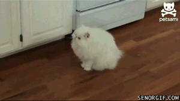
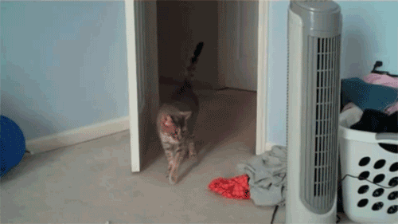
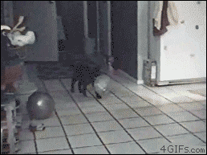
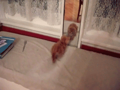
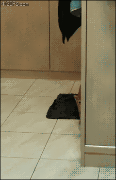
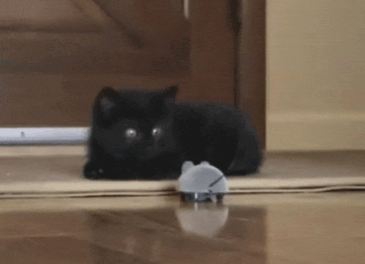
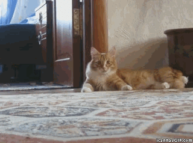
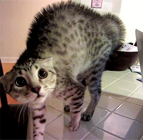